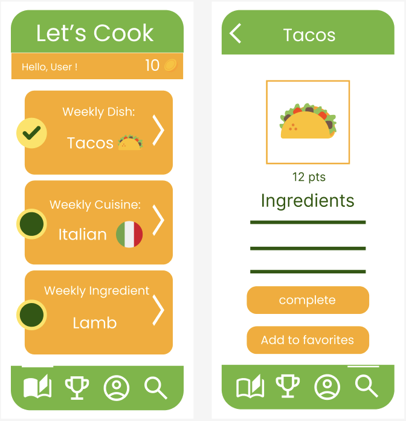
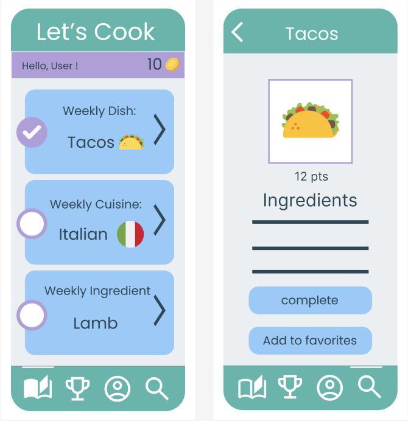
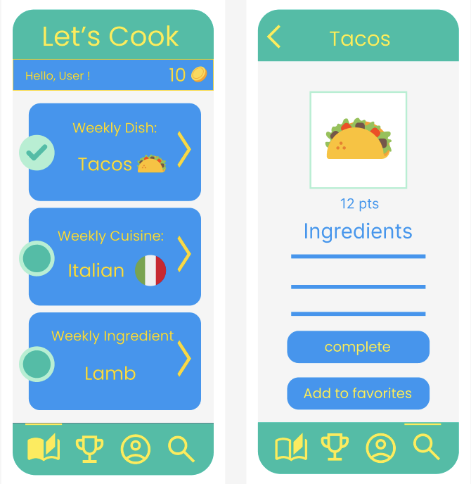
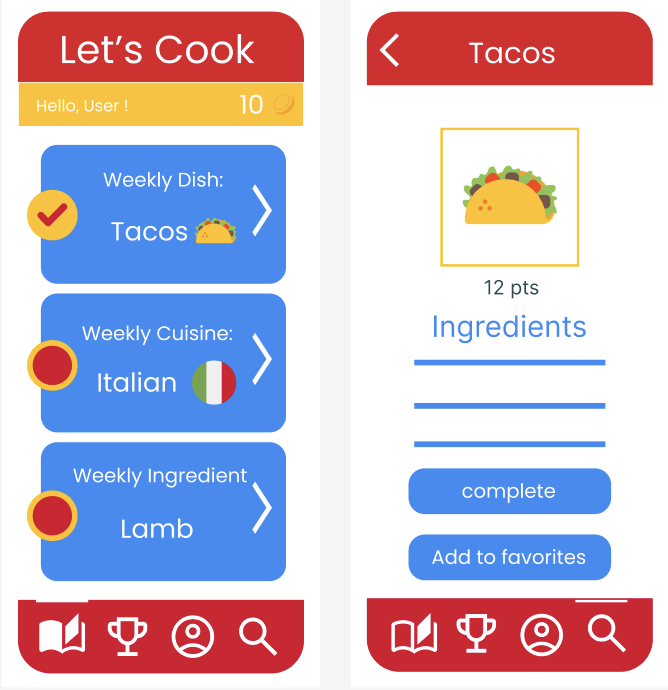
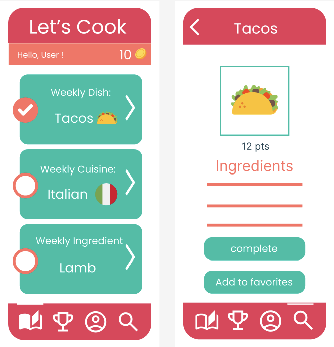

Design Learnings: Navigating the Needs of Kitchen Users
In the exciting world of culinary exploration, we took on the challenge to develop a gamified app that would serve as a guide for home cooks eager to delve into the diverse realms of cooking, yet often lacking the motivation to start cooking. Our goals were clear: to delve deep into the hearts and minds of our users, decipher their desires and struggles, and sculpt an interface that would highlight their passion for culinary creativity. We received meaningful feedback, profound insights, and navigated through a noticeable set of design challenges. In the following sections, we delve into the depths of our design journey, sharing the lessons learned and the evolution of our design process in a tale of culinary discovery and innovation.
Understanding User Needs: Getting in the Shoes of Cooking Enthusiasts
Our evaluation of user needs started with an immersive exploration into the world of cooking enthusiasts—a diverse set of individuals yearning to break free from the shackles of routine recipes and embark on a culinary adventure. Through a combination of interviews, surveys, and repeated user testing, we sought to comprehend and sympathize with the desires and aspirations of our target audience:
These distinctive narratives echoed a common yearning—a hunger for novelty, convenience, and enjoyment in their culinary journey. Considering these profound insights and other similar ones, we set a goal to craft an app that would serve as an inspiration and empowerment for cooking enthusiasts worldwide. Our main target audience was individuals who are seeking to get more involved in cooking and explore new recipes; these are busy folks who find themselves repeating the same recipes a lot or folks who need motivation to try out cooking more on their own rather than taking take-out.
Overall, the initial goal of the app was to allow users to explore new recipes, save the ones they like, connect with friends, and collect points based on their cooking progress. Here, you can see our low-fi prototypes: our three initial prototypes are on the left and our revised prototype is on the right.
Initial Low-Fi Prototypes


Revised Low-Fi Prototype

Creating and Improving Designs: Navigating Through Feedback
We used different versions of our design, like rough sketches, to guide us on our journey. These sketches were like maps helping us reach our final destination. But it was the thoughts and opinions from people using our app that really pushed us forward. They showed us where we were doing well and where we needed to make things better. By testing and checking our designs carefully, we found out what worked and what didn't. This helped us make small changes over time to make our app even better.
These helpful comments steered us in the right direction. They told us to make our app more fun to use, easier to understand, and to add more interactive parts. Every time we made a small change, we got closer to our goal of making an app that was clear, enjoyable, and simple to use. Our interviewees were busy students who often make the same dishes and want to cook more at home instead of ordering take-out. They liked that the colors were consistent and simple, and they liked our app's logo, "MealMuse". They also liked new features like searching for recipes by ingredient, earning points for cooking tasks, and having a page to see all the dishes they've made before. They thought the game-like parts of our design were fun, especially the weekly tasks and leaderboard, which motivated them to cook more.
Facing Challenges and Overcoming Design Problems
We encountered obstacles like deciding how our app should look and work, figuring out how to check if tasks were really done, and picking the best colors to use. But every time we faced a problem, we learned something new. We learned how important it is to make sure everyone can use our app easily. We figured out ways to make sure people knew if they finished a task or not. And we discovered which colors made our app look the best.
These stories of challenges and victories showed us the way forward. They fueled our desire to make an app that not only met but exceeded people's expectations.
Let’s elaborate more on the aspect of our app that we reconsidered in multiple iterations, namely the color selection for our buttons, headers, footers, text, etc. To determine the best color palette, we developed 5 interface variants (on Figma) after narrowing down from 8 options through a questionnaire. Each variant differed notably in color palette, with one variant featuring soothing tones and another variant opting for vibrant primary colors. Users tested these variants by performing tasks like navigating the homepage and completing weekly challenges. Our fourth variant ranked highest for its game-like appearance, while our fifth variant excelled in user interaction. Notably, Variant 5 struck a balance, garnering positive feedback for both game-likeness and user engagement. Following team discussion, we prioritized this well-balanced approach, aiming to optimize user experience by considering both elements. This iterative process allowed us to identify the most viable candidate for our app's interface, ensuring that our design resonates with users while offering an engaging and visually appealing experience.
Variant 1
Variant 2
Variant 3
Variant 4
Variant 5
You can see that our final color palette has improved significantly compared to our first figma model (hi-fi) through this process of repeated re-evaluation:
First High-Fi Model

Second High-Fi Model

Mood Board for This Model

Third High-Fi Model

Final Design

Another important aspect of MealMuse that was re-evaluated were the features relating to socializing (e.g. share options); we were encouraged by those who tested the interface (especially Prof. Head!) to focus more on our game-like aspects of our app, and avoid implementing affordances that relate to different purposes. The key recommendation was to set aside the collaboration features, such as the leaderboard, and instead focus on changing the incentive structure. They proposed emphasizing positive feedback, achievements, and streaks to motivate users, highlighting the importance of fostering a supportive and rewarding environment rather than relying on competition as a reward mechanism, because a lot of people don’t like competition. They appreciated the “dopamine effect” caused by seeing your points right; on that thread they suggested that we could also dedicate some time to enhancing aesthetics to further promote dopamine release and engagement (e.g. more pop ups).
Thus, we focused our energy on enhancing the game and cooking feel, as well as our app aesthetics (how it feels) with the following changes being the most important:
Learning from Experience: Setting a Course for Future Designs
Looking back on our journey, we learned many important lessons that will help us in our future design projects. We learned how important it is to listen to what people want and need. We realized that by making small changes over time, we can make big improvements. And most importantly, we understood that good design isn't just about how things look—it's about how they make people feel. After our final round of interviews with users as well as the feedback we received from our final presentations, we decided on some improvements we would like to make to the app, should we launch it in the market. We present these in the following paragraphs.
Our task completion is based on an honor system, where no authority actually confirms that a user has actually completed a task. In fact, someone could just mark a task as completed without having done so. We came up with ideas to work around this issue: for better verification, and community spirit, a user could take a picture of completed task, which would be sent to another randomly-chosen user in the app to verify. People should also get bonus points for verifying other people’s dishes. Alternatively, every user could have the option to navigate to a pool of task images where they can verify other user’s images as valid (with upper daily/weekly limit). To-be-verified images would enter this pool in a FIFO order so that no one has to wait too long to have their task verified.
Further improvements include having the Ingredients hyperlinked (e.g. on weekly task, in a dish description), giving the user the option to go to the search tool once they click on it; this action would take you to an ingredient search tool with the present ingredient inserted. Regarding the amelioration of our Completed Tasks page, we aspire that people can scroll to display completions with basic icons, with information about each completion, and each individual dish having the user’s picture. Lastly, we would like our search function to have an option to filter out common allergy-inducing ingredients, such as gluten, as well as to provide tasty alternatives to those.
Finishing Our Journey: Keeping Innovation at the Heart of Our Designs
Our journey may have come to an end, but our quest for making cooking more fun and exciting continues. With the lessons we've learned and the experiences we've gained, we're ready to embark on a new adventure in design—a journey fueled by empathy, creativity, and a passion for making people's lives better. As we set sail into uncharted waters, we carry with us the wisdom gained from our voyage, ready to inspire and delight users for many years to come.
Our tasks are designed to introduce users to new cuisines and ingredients from around the world, keeping cooking fresh and exciting. By integrating gameplay with culinary exploration, MealMuse empowers you to discover new flavors, hone your skills, and create unforgettable masterpieces.
Join the MealMuse community today and embark on your own culinary journey full of delicious memories!
-Alex, Petros and Joanna